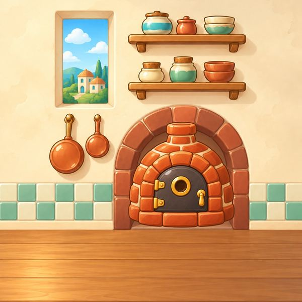

Hot Crumb
A cozy bakery card game for one thumb, starring Mabel the badger baker.
by Jarvis Studios. Not yet available, and no release date yet.

The pitch
Hot Crumb is a cozy bakery card game for one thumb. You are Mabel, a flour-dusted badger who runs a tiny hillside bakery. Each day you draw a hand of ingredient cards, pick the ones that make a recipe everyone already knows, and slide the tin into the oven. Before you commit, the counter shows exactly what the bake will score.
Hold your Flour back and it rises, so tomorrow’s bake is bigger, if you can afford to wait. Please the picky village Regulars, spend coins at the Market on better ingredients and charming Kitchen Helpers that bend the rules, and get through a week of rising targets to win the Royal Tasting. A run takes 15 to 20 minutes, and you can pause after any bake.
A day in the bakery
- Draw a handEach day starts with a hand of ingredient cards: flour, eggs, butter, sugar, fruit and cream.
- Pick a recipeChoose the cards that make a recipe everyone already knows. The counter shows the score before you bake.
- Into the ovenSlide the tin in, please the picky village Regulars, and save up for the Royal Tasting.
Good to know
- One thumb, taps onlyPortrait and turn-based. No timer runs while you think.
- Readable before you bakeFlavor × Warmth = Delight, shown in full before you tap Bake.
- Fair, alwaysNo energy, no lives, and nothing paid touches a run.
The art on this page is early work in progress.
Documents
Hot Crumb has no Terms of Use or Privacy Policy yet. They will be published here before the game is released.